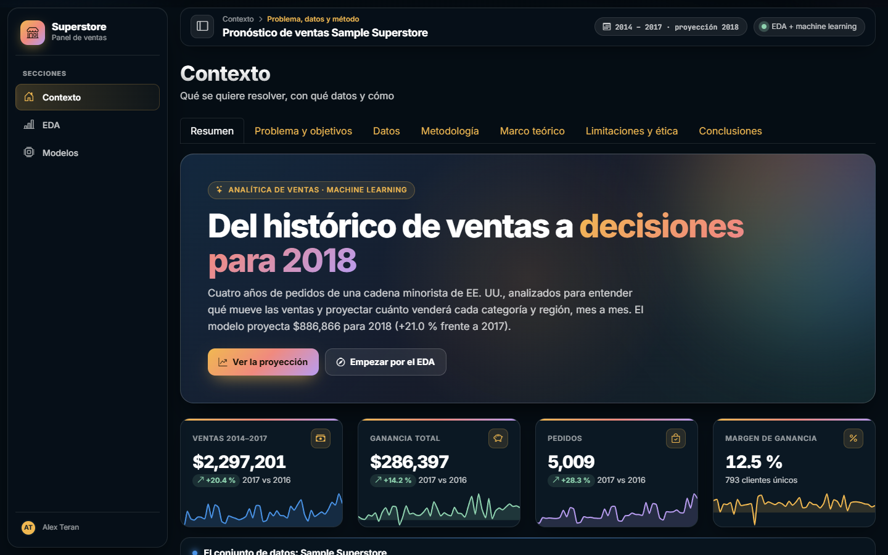
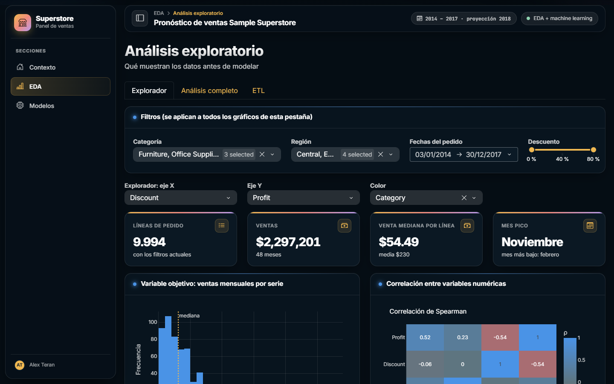
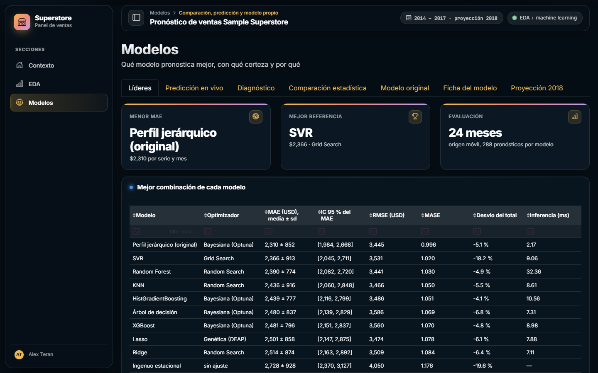
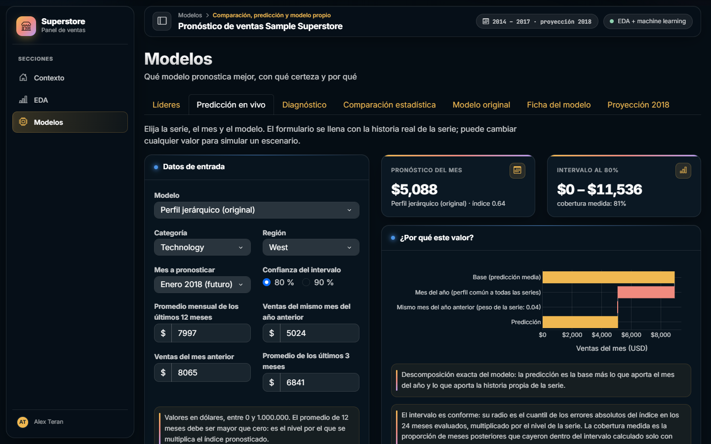
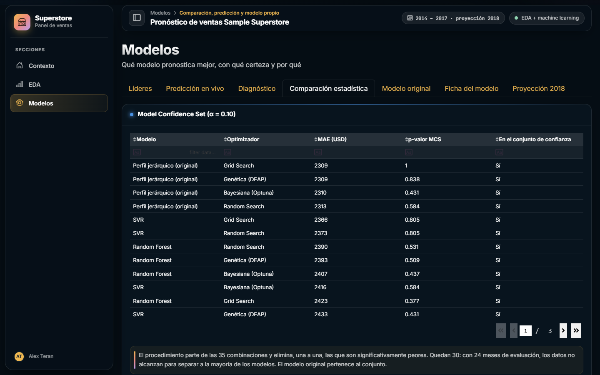
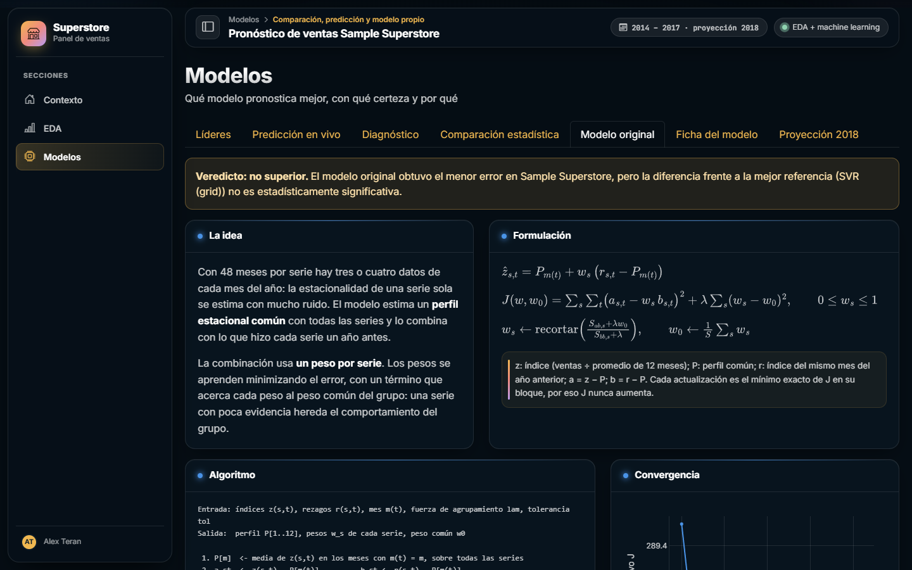

Dashboard y despliegue#
El producto: una aplicación web para explorar los datos y usar los modelos
El tablero está publicado en https://superstorepython2.onrender.com. Se construyó con Dash y Plotly y no entrena nada: carga los modelos ya guardados y las tablas de los experimentos.
Arquitectura#
app.py punto de entrada: crea la app (use_pages=True), el menú lateral y expone "server"
pages/
contexto.py sección 1, ruta "/"
eda.py sección 2, ruta "/eda"
modelos.py sección 3, ruta "/modelos"
src/
original_model.py clase del modelo original
data.py carga única de datos, resultados y modelos (lru_cache)
plots.py funciones que construyen las figuras
explicacion.py valores de Shapley exactos para la explicación local
tabs/ contenidos reutilizados por las páginas (introducción, EDA completo, ETL,
proyección, pronóstico animado, conclusiones) y el asistente de IA
artifacts/ 8 modelos serializados con joblib y metadata.json
experiments/resultados/ tablas de la validación anidada y de las pruebas
assets/ estilos y efectos de la interfaz
La interfaz (pages/, tabs/), la lógica de datos (src/data.py) y los modelos (artifacts/)
están separados. Cada página carga lo que necesita la primera vez que se abre y lo deja en memoria.
Contenido de cada sección#
Sección |
Qué responde |
Contenido |
|---|---|---|
Contexto |
¿Qué problema se resuelve, con qué datos y cómo? |
Resumen con cifras clave, problema y objetivos, descripción y diccionario de los datos, metodología, marco teórico, limitaciones y consideraciones éticas, autor, versión y conclusiones |
EDA |
¿Qué muestran los datos antes de modelar? |
Explorador con filtros globales (categoría, región, rango de fechas y descuento) que actualizan todos los gráficos: distribución de la variable objetivo, correlación, explorador con ejes y color a elección, faltantes y atípicos, descomposición de la serie, ACF, PACF y prueba de Dickey–Fuller. Además, el análisis exploratorio completo y el ETL |
Modelos |
¿Qué modelo pronostica mejor, con qué certeza y por qué? |
Tabla de líderes (ordenable y filtrable), las 28 combinaciones, comparación de optimizadores; predicción en vivo con intervalo y explicación local; diagnóstico del modelo elegido; Model Confidence Set y pruebas por pares; el modelo original (idea, formulación, algoritmo, convergencia, pesos, sensibilidad, trabajos cercanos, veredicto, robustez); ficha del modelo; proyección 2018 y pronóstico animado |
Cada gráfico va acompañado de una frase que lo interpreta.
Capturas de pantalla#
Las capturas se tomaron del tablero en ejecución, a 1440 × 900 píxeles. La Figura 1 muestra la portada de la sección Contexto: el menú lateral fijo con las tres secciones, las pestañas internas y las cifras clave del conjunto de datos.


Figura 1 Sección Contexto. La portada resume el problema y la proyección para 2018; debajo, las ventas, la ganancia, los pedidos y el margen de 2014–2017, con su variación de 2017 frente a 2016.#
En la sección EDA (Figura 2), los filtros de categoría, región, fechas y descuento actualizan a la vez todos los gráficos de la pestaña.


Figura 2 EDA → Explorador. Arriba, los filtros globales; después, los selectores del explorador bivariado (eje X, eje Y y color), las cifras que responden a los filtros, la distribución de la variable objetivo y la matriz de correlación de Spearman.#
La sección Modelos abre con la tabla de líderes (Figura 3), que se puede ordenar y filtrar por cualquier columna.


Figura 3 Modelos → Líderes. La mejor combinación de cada modelo con su MAE (media ± desviación estándar), el intervalo de confianza al 95 %, el RMSE, el MASE, el desvío del total y el tiempo de inferencia. El modelo original encabeza la tabla, pero su intervalo se solapa con el de SVR y Random Forest.#
La predicción en vivo (Figura 4) se llena con la historia real de la serie elegida y devuelve el pronóstico, el intervalo conforme y la explicación local.


Figura 4 Modelos → Predicción en vivo, para Technology en West, enero de 2018, con el modelo original. El intervalo al 80 % tiene una cobertura medida del 81 %; el gráfico descompone la predicción en la base, el aporte del mes del año y el del rezago propio de la serie.#
La comparación estadística (Figura 5) presenta el Model Confidence Set con el modelo original incluido.


Figura 5 Modelos → Comparación estadística. De las 35 combinaciones, 30 quedan en el conjunto de confianza al 10 %: con 24 meses de evaluación los datos no alcanzan para separar a la mayoría de los modelos.#
Por último, la subsección del modelo original (Figura 6) empieza por el veredicto y sigue con la idea, la formulación, el algoritmo y la curva de convergencia.


Figura 6 Modelos → Modelo original. El veredicto explícito («no superior») aparece antes que cualquier otro contenido, seguido de la formulación, el pseudocódigo y la convergencia del objetivo.#
Predicción en vivo#
El usuario elige el modelo, la categoría, la región y el mes. El formulario se llena con la historia real de esa serie (promedio de 12 meses, mismo mes del año anterior, mes anterior y promedio de tres meses) y cualquier valor se puede cambiar para simular un escenario. La salida muestra:
el pronóstico en dólares y el índice;
un intervalo de predicción conforme al 80 % o al 90 %, con la cobertura medida en la evaluación;
una explicación local: para el modelo original, su descomposición exacta en base, aporte del mes del año y aporte del rezago propio; para los demás, los valores de Shapley exactos de las siete variables.
Las entradas se validan: valores faltantes, negativos, mayores de un millón o un promedio de 12 meses
igual a cero producen un mensaje claro (dbc.Alert) en lugar de un error.
Decisiones de diseño#
Tema oscuro y una paleta con significado fijo: azul para lo real, ámbar para la proyección, coral para caídas y errores, verde para mejoras. Un color significa lo mismo en todo el tablero.
Menú lateral fijo con las tres secciones y pestañas dentro de cada una, para no saturar la pantalla. Solo se construye la pestaña abierta.
Rejilla de Bootstrap (
dbc.Row,dbc.Col): el tablero se reorganiza en tableta y pantallas pequeñas.Rendimiento: datos y modelos se cargan una sola vez (
functools.lru_cache); los callbacks solo recalculan lo que cambia.Asistente de IA flotante en todas las secciones: responde preguntas sobre los datos y la proyección con las tablas del proyecto. Necesita una clave de API; sin ella, el tablero funciona igual.
Ficha del modelo#
La ficha (MODEL_CARD.md) se puede leer desde el propio tablero, en Modelos → Ficha del modelo.
Describe el uso previsto, los datos, las métricas, los usos no recomendados, las limitaciones y los
riesgos.
Despliegue en Render#
La app expone
server = app.serverpara el servidor de producción.requirements.txtfija las versiones exactas, incluidogunicorn;render.yamlfija Python 3.10.11.En Render, un Web Service conectado al repositorio de GitHub, con comando de construcción
pip install -r requirements.txty comando de iniciogunicorn app:server.Cada cambio en la rama principal dispara un despliegue nuevo.
Los artefactos pesan menos de 500 kB en total (el mayor, Random Forest, 297 kB), muy por debajo del límite de memoria del plan gratuito. El servicio gratuito se suspende tras un tiempo sin uso: la primera visita puede tardar cerca de un minuto.